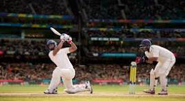

Cricket

Cricket is played with a bat and ball and involves two competing sides (teams) of 11 players. The field is oval with a rectangular area in the middle, known as the pitch, that is 22 yards (20.12 metres) by 10 feet (3.04 metres)
Rules for playing cricket
- Cricket is played by two teams of 11, with one side taking a turn to bat a ball and score runs, while the other team will bowl and field the ball to restrict the opposition from scoring.
- The main objective in cricket is to score as many runs as possible against the opponent